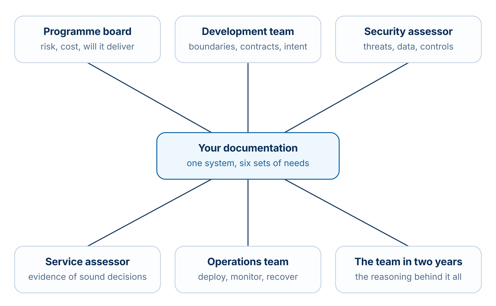
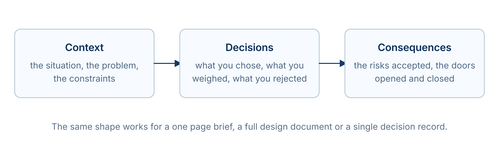
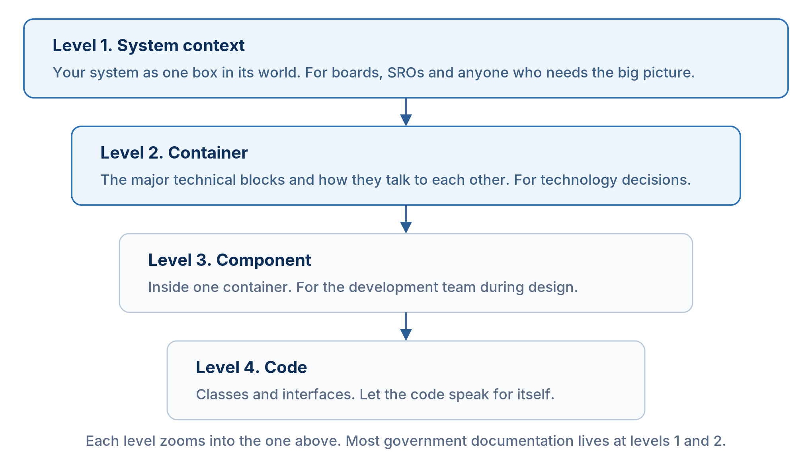
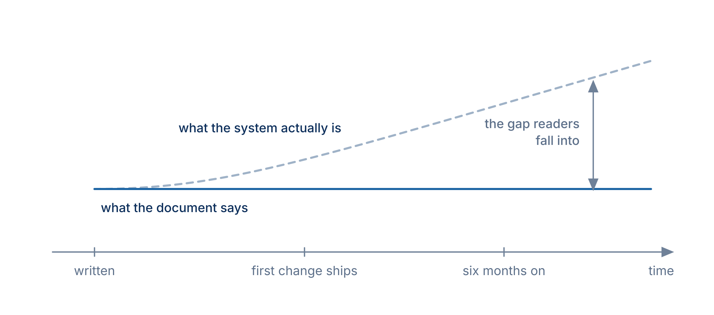

Architecture documentation that people actually read
Most architecture documentation goes unread. This guide shows you how to write the kind that earns its readers, because it tells them what they need to know, when they need it.
You'll come away with:
- Why most architecture documents fail, and the habits that sink them
- How to shape any document around context, decisions and consequences
- How to use the C4 model to draw diagrams that communicate rather than confuse
- How to judge the minimum viable documentation and keep it alive over time
Why most architecture documentation goes unread
Be honest about the starting point. Teams produce 60 page Solution Architecture Documents that nobody opens after the initial review meeting. They draw Visio diagrams so dense with boxes and lines that they communicate nothing. They write prose so abstract it could describe any system ever built. The effort is wasted, the decisions are lost, and six months later someone asks why the system was built this way and nobody can answer.
That matters because documentation, done well, is the main mechanism through which architecture decisions are communicated, challenged and preserved. It is how the team building the system understands the design intent. It is how the team that inherits the system maintains it without reverse engineering everything. It is how you defend your decisions when they are questioned at spend control or a service assessment. When it fails, it usually fails for one of five reasons.
Length comes first. A 60 page document is a compliance artefact produced because a governance process demands it. Nobody reads it cover to cover, and the moment a document exceeds what someone can absorb in one sitting, most of the audience is gone.
Then abstraction. Too many documents read as if the author has never seen the actual system. They mention the integration layer without saying what integrates with what. They reference the security model without explaining what is protected and how. Readers finish them knowing nothing they could not have guessed.
Then timing. A document written at the start of a project describes a system that does not yet exist. One written at the end describes a system everyone already understands. The useful window is during design and delivery, but most teams treat documentation as a one off activity rather than a living practice.
Then audience confusion. A single document trying to serve the programme board, the development team, the security assessor and the operations team serves none of them well, because each needs different information at a different depth.
And finally honesty. Plenty of documents exist to justify decisions already made. They present the chosen option as obviously correct and the rejected ones as obviously flawed. Readers sense it, stop trusting the document, and from that point it is wallpaper.
Few architects fail here because they cannot write. They fail because they write for themselves rather than for their audience, recording what they find interesting rather than what their readers need, and chasing completeness when the reader wants clarity.
The moment a document exceeds what someone can absorb in one sitting, you have lost most of your audience.
Write for your audience
The most useful question to ask before writing anything is who will read this and what do they need from it. In government the honest answer is usually six different groups, each wanting something the others do not.

The programme board and the SRO want to understand risk, cost and whether the architecture supports delivery. They do not care which message broker you chose. They want to know whether the system will work, what could go wrong, and which decisions need their input. The development team wants the design intent, the boundaries, the integration contracts and the constraints they must work within, with enough clarity to build the right thing without guessing what you meant. Philosophy does not help them.
Assessors want specifics. The security assessor wants the threat model, the data classification, the trust boundaries and the actual controls, and reassurance counts for nothing with them. The service assessor wants evidence that the architecture supports the Service Standard and the Technology Code of Practice, which means evidence of sound decision making, since good technology choices alone do not pass an assessment. The operations team wants to know how to deploy, monitor, scale and recover the system. And the team that inherits it in two years wants the reasoning behind the decisions, because the decisions themselves will be visible in the code and the reasoning will not.
Once you know your reader, format, length and depth choose themselves. A one page brief for the programme board is a different artefact from a component design for the development team. Both are valid. Neither replaces the other.
The minimum viable document
"More documentation means better architecture."
It usually means more unread documentation. The minimum viable document is the smallest artefact that achieves its communication purpose. For some contexts that is a single page. For others it is a detailed specification. The discipline is to start minimal and add detail only where it earns its place.
For a discovery or alpha phase, four pages will usually do it:
- A context diagram showing the system boundary and the external dependencies
- The key architecture decisions, each with a brief rationale
- A statement of constraints and assumptions
- The identified risks and where each one currently stands
Four pages. The team can start building, the programme board can make funding decisions, and the assessor can see you are thinking clearly. Beta and live need more, but the test stays the same for every section: does this earn its place? If you removed it, would anyone notice? Would anyone make a worse decision? If the answer is no, delete it.
Government adds its own pressure here, because governance and assurance processes appear to reward volume, and the temptation to pad is real. Resist it. Assessors are experienced professionals who can tell substance from padding, and a concise document that answers the right questions impresses them far more than a bloated one that buries the important information in noise.
If you cannot say what a section is for and who will read it, that section should not exist.
Context, decisions, consequences
The most effective architecture documents follow one structural principle. Tell the reader where we are, what we decided, and what it means. Context grounds the reader in reality before the design appears: the problem, the constraints, what has already been settled. Decisions is the core, covering what you chose, why, which options you considered and which trade offs you accepted. A document without clear decisions is a description of a system rather than an explanation of one. Consequences closes the loop: the risks you have taken on, the capabilities gained and lost, and what will need revisiting later.

The shape works because it mirrors how people take in information, and it works at every scale. A one page brief can follow it. A detailed design can follow it. An Architecture Decision Record already does. Contrast it with the typical template: introduction, scope, assumptions, principles, then a march through logical, physical, security, data, integration, deployment and operational architecture. That structure is organised by topic, so a reader has to hunt through half the document to understand a single decision, and it rewards completeness over clarity.
If your organisation mandates a template like that, you can still apply the principle beneath each heading. The template dictates the headings. You control what sits under them.
Diagrams that communicate
Diagrams are the most powerful communication tool you have, and the most frequently misused. A good diagram communicates one thing clearly. A bad one tries to communicate everything and communicates nothing. The difference has little to do with artistic skill. It is clarity of purpose.
Four failures turn up again and again in government:
- The everything diagram, showing every system, integration, data flow and user on a single page. It looks impressive on a wall and tells a reader nothing.
- The boxes and lines diagram, where every box carries a generic label like application server or integration layer and every line is unlabelled, so nobody can tell what actually flows where.
- The Visio masterpiece, with 47 shapes, colours and line styles and a legend taking up half the page. The visual complexity drowns the information.
- The aspirational diagram, showing a clean target state while ignoring the messy current state the team actually has to deal with.
Good diagrams share the same habits. A clear title stating what the diagram shows. A notation the reader can learn in seconds. Only the elements relevant to the diagram's purpose. Relationships labelled with verbs that say what happens between components. An explicit scope, so the reader knows what has been deliberately left out. And underneath all of it, one practical rule: if you cannot say what your diagram shows in one sentence, it is trying to show too much. Split it into several diagrams, each with a purpose of its own.
The C4 model in practice
The C4 model, created by Simon Brown, gives you a structured way to draw architecture, and it suits government work particularly well. Four levels of abstraction, each serving a different audience, each zooming into the one above.

Level 1, system context, shows your system as a single box surrounded by the users and systems it interacts with. In government this is where the relationship to GOV.UK, the shared platforms, other departmental systems and external parties becomes visible, and it is the diagram for your board, your SRO and anyone who needs the big picture without technical detail. Level 2, container, zooms in to the major technical building blocks: web applications, APIs, databases, queues, file stores. This is where you show which components run on which cloud platform, what sits behind the department's API gateway and where data is stored, and it is the diagram for anyone making technology decisions.
Level 3, component, opens up a single container to show its internal structure. It earns its place during design discussions and for genuinely complex components, but most government documentation does not need it formally. Level 4, code, changes too often to draw by hand. Let the code carry it.
The power of C4 sits in the principle of progressive detail rather than in any particular notation. You start wide and zoom only where a reader needs you to, and each level has an audience of its own. In practice most government documentation needs levels 1 and 2, which keeps the diagram set small and every diagram purposeful.
Keep it alive or watch it rot
The hardest problem in architecture documentation is keeping it current, because rot is the natural state. The moment you finish writing, the system starts diverging from what you described. Requirements move, decisions get revised, integrations get added. Left alone, the document becomes actively misleading, which is worse than having no document at all, because it creates false confidence. People make decisions on stale information. New joiners learn the wrong things.

There are two honest ways to deal with it. The first keeps documentation minimal and close to the code. Decisions live as Architecture Decision Records in the same repository as the source, so they get updated as part of the normal development flow, and diagrams are generated from code or configuration with tools like Structurizr, PlantUML or Mermaid, so they stay current on their own. This suits teams with strong engineering practice. The second accepts that some documents will go stale and designs for it: a last verified date on every document, a named owner responsible for review, a documentation check built into sprint ceremonies or quarterly planning, and a firm cycle for the documents that matter most, the context diagram, the key decisions and the security architecture, even if the rest slips.
What does not work is pretending the problem away. In government, where teams change often and programmes run for years, stale documentation is a genuine operational risk. The practical mitigation is to keep formal documentation thin and focused on what changes slowly, the context, the principles and the key decisions, while detailed technical material lives with the code and is maintained by the team.
One discipline beats every tool. When a decision changes the documented design, update the document the same week. Not next sprint. Not before the next assessment. This week. If you cannot manage that, your documentation is too heavy.
When not to document
This may be the most useful judgment in the whole lesson. Knowing when to leave the keyboard alone matters as much as writing well.
Do not document the obvious. If your department has a standard approach to authentication and you are using it unchanged, one sentence referencing the standard beats a page defending it. Do not document what changes daily. Deployment configuration, feature flags and environment settings belong in code and configuration management, because by the time you have written them down they are wrong. Do not document for completeness. If a template section adds nothing for any reader, leave it out or write not applicable with a line of reasoning; an empty section with a clear rationale is more honest than a padded one. And do not duplicate what the code already says. Well structured code with clear naming and good tests documents itself at the implementation level, and your job is the why and the shape above it.
Before writing anything, ask three questions. Who needs this? When will they read it? What decision will it inform? If you cannot answer them, you are writing for yourself.
It takes confidence to tell a programme that something does not need a document, especially in a culture that treats artefacts as evidence of work. Have the confidence anyway. Your teams will thank you for it.
The best architects produce less documentation of higher quality.